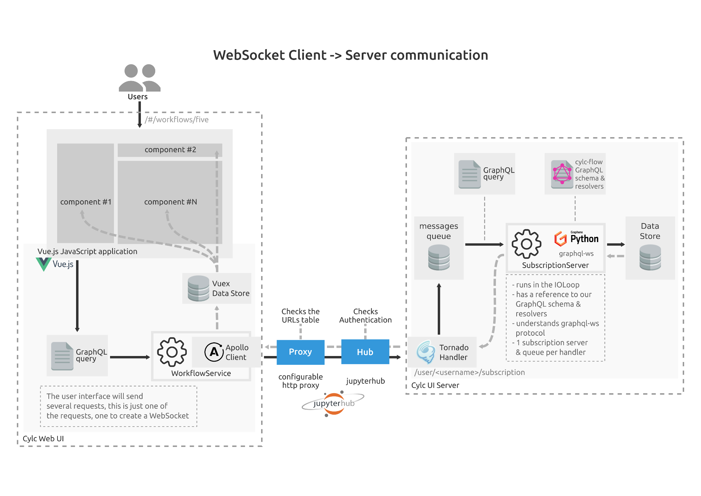

Web§
WebSocket§
The Cylc Web UI uses Apollo Client to handle GraphQL query requests. A GraphQL query is used to create a GraphQL subscription.
Once a subscription is created, the server will send back a message with the query result whenever there is new data available.
In order to handle the communication between the client and the server, Apollo Client uses WebSockets. It will have one WebSocket per user session.

Every message received by the server is added to a queue, and processed by the server as soon as possible.
The server uses the Cylc UI Server schema and resolvers to validate the query and to fetch data from the data store for the query response.
The query result is then serialized as JSON and sent back to the client. The work of the Apollo Client ends after it pushes the data to the Vuex store.
The communication between client and server follows a protocol called graphql-ws protocol.

After a channel between client and server is open, the messages
follow that protocol, starting by the connection init message,
that simply expects an ack message back from the server,
where the ack is an acknowlegdement to the client - note
that the protocol does not define an ack as a MUST, but
rather as a MAY, so a client may interpret not receiving an
error as an acknowledgement to proceed as well.
The next message will be a start, which will contain the
GraphQL query subscription. If there were no errors, the client and
server susbcription is established, and the client will start
receiving the GraphQL responses.
The protocol also supports other messages, such as stop, to
tell the server it doesn’t need to send any more data as that
subscription is now cancelled.